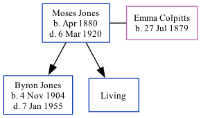

Moses Jones, the husband of Emma Alverda Colpitts (the third cousin twice-removed on the father's side of Nigel Horne), was born in New Brunswick, Canada in Apr 18801 and married Emma (with whom he had 2 children: Byron Moses and Leona, along with 1 surviving child) in Westmorland, New Brunswick, Canada on Jun 24, 19032. In 1911, he lived in Westmorland1 which is where he died on Mar 6, 1920.
1911 Census of Canada Online publication - Provo, UT, USA: Ancestry.com Operations Inc, 2006. .Original data - Library and Archives Canada. Census of Canada, 1911. Ottawa, Ontario, Canada: Library and Archives Canada, 2007. http://www.collectionscanada.gc.ca/databases/census-19 (Marital Status: Married; Relation to Head of House: Head)
New Brunswick, Canada, Marriages, 1789-1950
Family Tree

Map
Generated by ged2site. Last updated on Feb 28, 2025